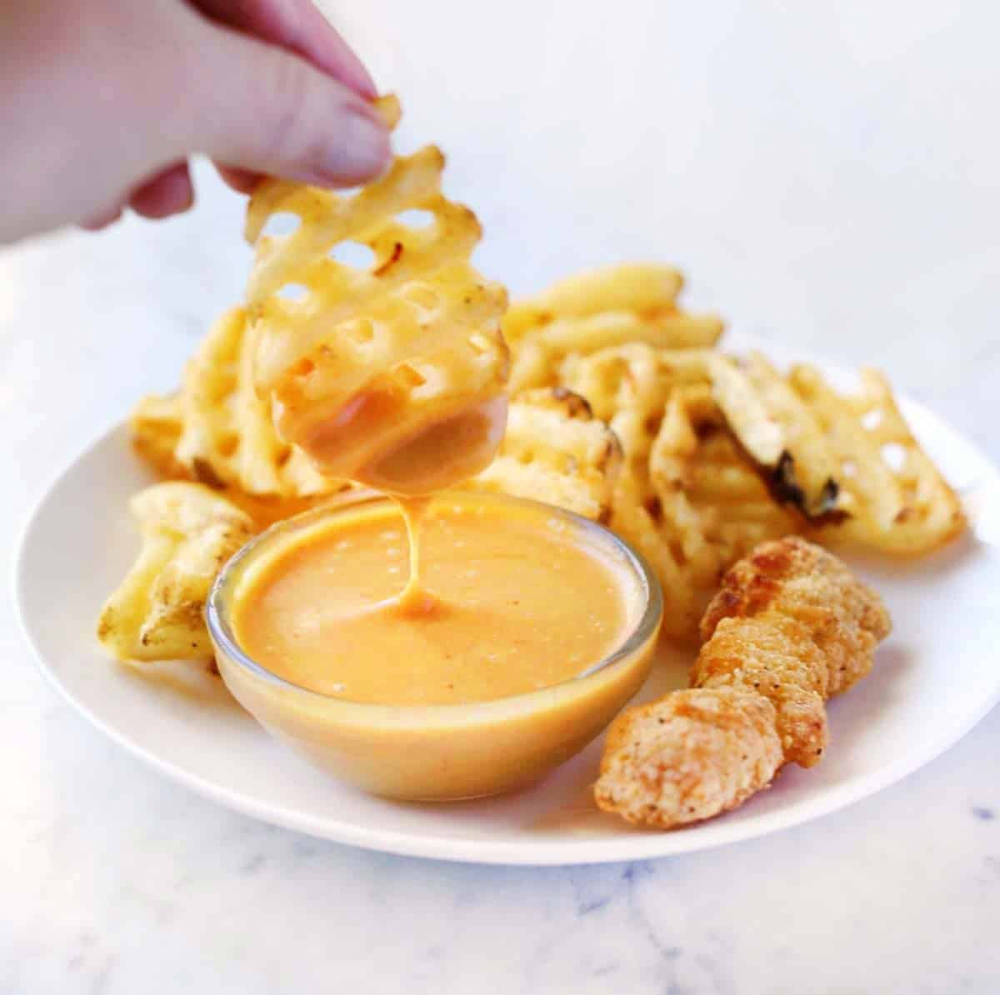

This copy-cat Chick-Fil-A sauce recipe is everything you want in a copy-cat. We love Chick-Fil-A sauce so we came up with this copy-cat version by fiddling around with some ingredients that we thought the restaurant uses.
There are times when I want Chick-Fil-A sauce but not the food itself. Especially when I am having a sandwich or chicken from a different restaurant. I want the sauce ON DEMAND.